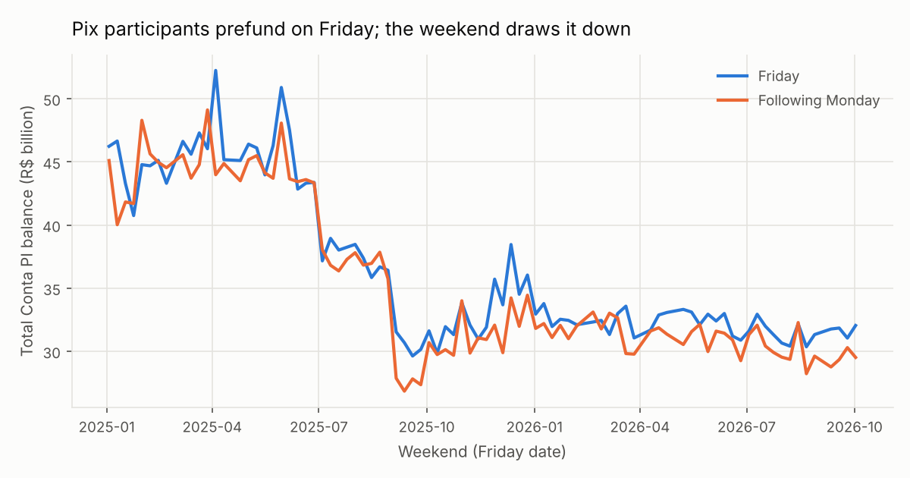
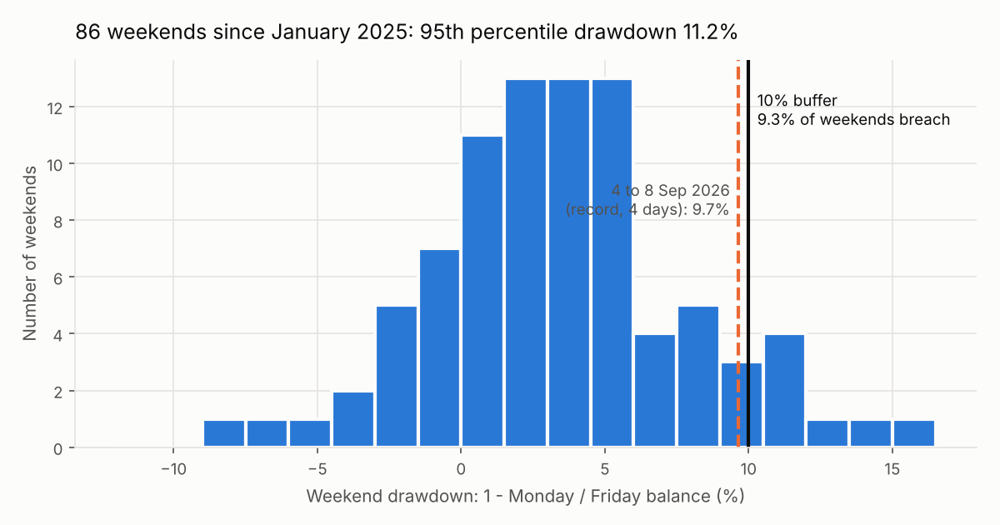
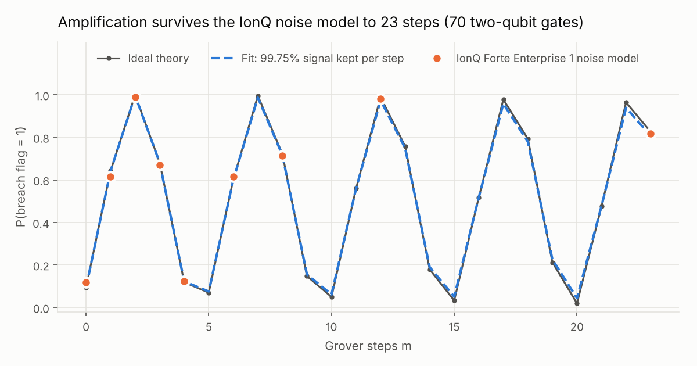
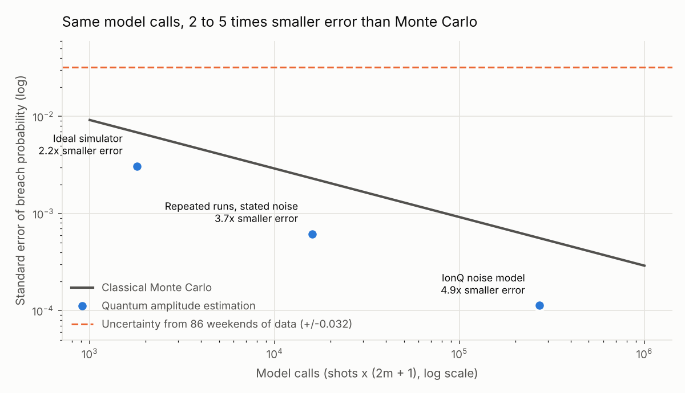

How often does a weekend drain Brazil's Pix liquidity?
Quantum amplitude estimation of the chance that a weekend consumes more than 10% of the liquidity Pix participants prefund on Friday, from Central Bank of Brazil data, run on the IonQ Forte Enterprise 1 noise model and on IonQ hardware.
9.3%of 86 weekends drained more than 10% (8 weekends)
4.9×smaller error than Monte Carlo at equal model calls, IonQ noise model
99.75%signal kept per Grover step on the IonQ noise model
0.155°rotation error per step at which the advantage disappears (measured: 0.00° ± 0.04°)
73.5%IonQ hardware, 8 Grover steps (ideal theory 72.1%)
Try a different buffer
9.3%
chance a weekend drains more than the buffer
Every weekend since January 2025 (drawdown = 1 − Monday / Friday balance)
within bufferbreach
What the quantum circuit would see (ideal theory, P(flag = 1) after m Grover steps)
sin²((2m + 1)θ), sin²θ = breach probability
The slider recomputes from the 86 real weekends in your browser. The quantum and hardware results on this page are for the 10% buffer; other buffers would need new runs.
Results
Run
Estimate
Error vs Monte Carlo, equal model calls
Ideal simulator
0.0965
2.2× smaller
Repeated runs, stated noise (5 seeded runs)
bias +0.00026
3.7× smaller (measured spread 0.00062)
IonQ Forte Enterprise 1 noise model
0.0930
4.9× smaller
IonQ Forte Enterprise 1 hardware, m = 0 and m = 8
7.5% and 73.5% flag rate
200 shots each; signal kept per step at least 96.7%
Charts

Participants prefund on Friday; the weekend draws it down.

86 weekends, with the 10% buffer and the record holiday weekend.

Amplification follows theory on the noise model and on hardware.

Same model calls, 2 to 5 times smaller error than Monte Carlo.
What this does and doesn't show
With only 86 weekends, the data itself is uncertain by about ±0.032. The quantum advantage shown here is in computing a model's tail probability with fewer calls, not in removing that data uncertainty. The circuit uses 2 qubits and 3 two-qubit gates per Grover step; hardware results are two 200-shot runs.